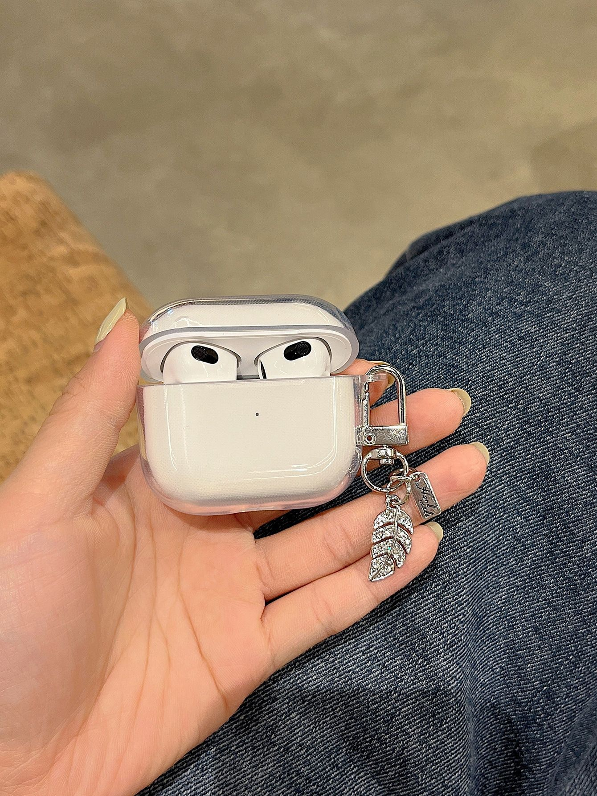

- Cap 14_.jfif)
AirPods 3 mang tới một sự lột xác đáng kể so với hai thế hệ AirPods trước đây, cả về ngoại hình lẫn chất âm cũng như tính năng bổ trợ.
Đối với người dùng iPhone thì AirPods có lẽ là một trong những món phụ kiện công nghệ không thể thiếu. AirPods của Apple có thể được coi như là thiết bị đã thay đổi thị trường tai nghe không dây từ trước tới nay. Dù nhận về nhiều chỉ trích kể từ khi ra mắt, tuy nhiên tới thời điểm hiện tại, Apple đã là nhà sản xuất số một về thị phần tai nghe không dây.
Mới đây, mẫu tai nghe AirPods 3 mới nhất của “nhà Táo” đã chính thức được giới thiệu tới người dùng. Về cơ bản, AirPods 3 đánh dấu sự thay đổi ngoạn mục của dòng sản phẩm AirPods bản tiêu chuẩn. So với thế hệ thứ nhất và thứ hai thì AirPods 3 mang tới nhiều cải tiến đáng giá, cả về thiết kế, tính năng lẫn chất lượng âm thanh. Hiện tại, AirPods 3 cũng đã được phân phối chính hãng tại thị trường Việt Nam với mức giá tại CellphoneS là 4,990,000 đồng.
Trong khuôn khổ bài viết này, Du.Khanh sẽ gửi tới quý độc giả bài đánh giá chi tiết AirPods 3, mẫu tai nghe không dây mới nhất của “nhà Táo” và cũng là để xem xem ở mức giá xấp xỉ 5 triệu đồng, mua AirPods 3 có phải là một sự lựa chọn hợp lý?
Xét về ngoại hình, điểm đầu tiên mà chúng ta có thể nhận thấy là sự thay đổi thiết kế của thế hệ AirPods 3 so với hai thế hệ AirPods 1 và 2 trước đây. AirPods 3 mới đã có thiết kế mang xu hướng hiện đại hơn, điều mà đáng ra Apple đã có thể làm từ rất lâu. Phiên bản năm nay có thiết kế khá giống với AirPods Pro, cả về tai nghe lẫn case sạc bên ngoài.
AirPods 3 sử dụng thiết kế case sạc hình chữ nhật nhưng nằm ngang ra tương tự AirPods Pro, kích thước tổng thể thì nhỏ hơn đôi chút (bạn đọc có thể xem hình so sánh ở dưới). Bản thân mỗi bên tai nghe cũng được thiết kế phần đuôi ngắn lại, phần housing to hơn và nghiêng một góc chéo giống AirPods Pro. AirPods 3 giờ đây đã không còn giống một chiếc tai nghe EarPods cắt dây.
Case sạc của AirPods 3 vẫn sử dụng ngôn ngữ thiết kế như bao đời AirPods khác, gồm mặt trước là đèn LED thông báo trạng thái, mặt sau là nơi đặt nút kết nối cũng như reset, phía dưới là cổng sạc Lightning. Bản lề của AirPods 3 cũng được hoàn thiện từ kim loại cực kỳ chắc chắn.

Một điểm mà tôi cảm thấy không hài lòng ở case sạc của AirPods 3 nói riêng cũng như AirPods nói chung là thiết kế case sạc hoàn thiện từ nhựa bóng. Chất liệu nhựa này theo thời gian sẽ khiến bề mặt case bị xước dăm, chưa kể phía bên trong lại hoàn thiện từ nhựa nhám mà khá dễ bám bẩn, dùng một thời gian nếu bạn không vệ sinh thường xuyên thì có thể giống như chiếc AirPods 1 mà tôi đã dùng sau 2 năm. Nhưng bù lại AirPods 3 năm nay đã có case sạc đạt chuẩn chống nước IPX4.
Vẫn như truyền thống của dòng AirPods bản tiêu chuẩn, Apple thiết kế AirPods 3 theo dạng earbuds. Đây không hẳn là một kiểu thiết kế phổ thông bởi nó không mang lại những ưu điểm như tai nghe in-ear, ví dụ như khả năng chống ồn thụ động. Tuy nhiên với những ai quen đeo earbuds thì AirPods 3 lại là một lựa chọn “chuẩn chỉnh”.